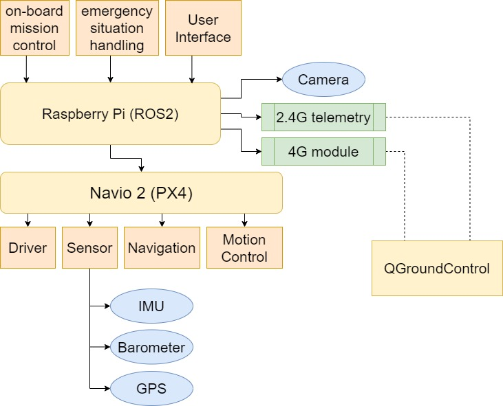
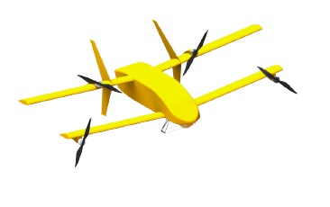
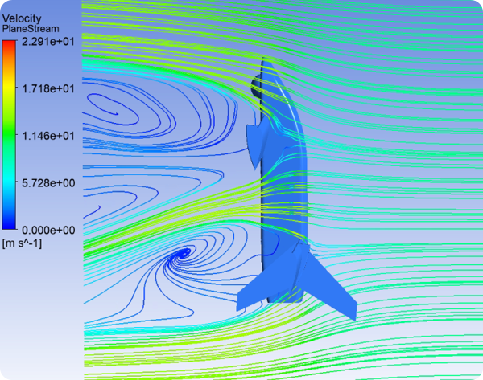
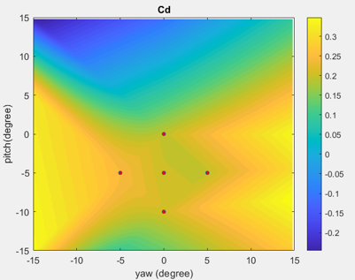
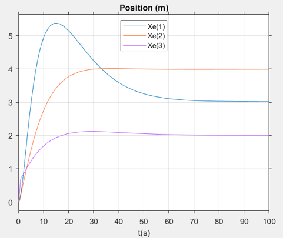

Tandem Wing Tail Sitter |
|
Project Goal |
The project started because of the "Drone Innovation and Application Competition", which required participants to bring out a proposal of a novel UAV that 1. can carry a 2 kg package 2. finish a 15 km journey 3. has weight less than 10 kg Furthermore, the winner can have a chance to actually build the proposed aircraft funded by the government. |
Design Concepts |
Our proposal has following characteristic: 1. We adopt tandem wing configuration because of better lift-drag ratio. 2. The tail-sitter design can enable the UAV to vertically take-off and land. 3. The tail-sitters have larger-than-1 thrust-to-weight ratio, which makes the drone agile. To ease the instability for tail sitters flying in strong wind, we proposed a control scheme, that is, the drone will choose to face the wind with the lowest drag side.  The control system schematic  The external design of our drone |
Simulation and Validation for the design. |
 We use ANSYS to understand how wind affects vertical flight. This shows the wind comes from the drone's belly.  We assume the drag is the function of pitch angle, yaw angle and the air speed, so we can curve-fit the ANSYS simulation results and produce a drag model.  Using our drag model as a reference, we use Simulink to validate whether PID controller can stabilize the drone. As shown in the picture, the drone position(of 3 axis) converges to a set point with given initial condition. |
Future Works |
We are awarded "High Dinstinction Award". (top 5 over 57 teams). Also, we are currently manufacturing a scaled model to prove this concept with funds from Taipei Computer Association. |